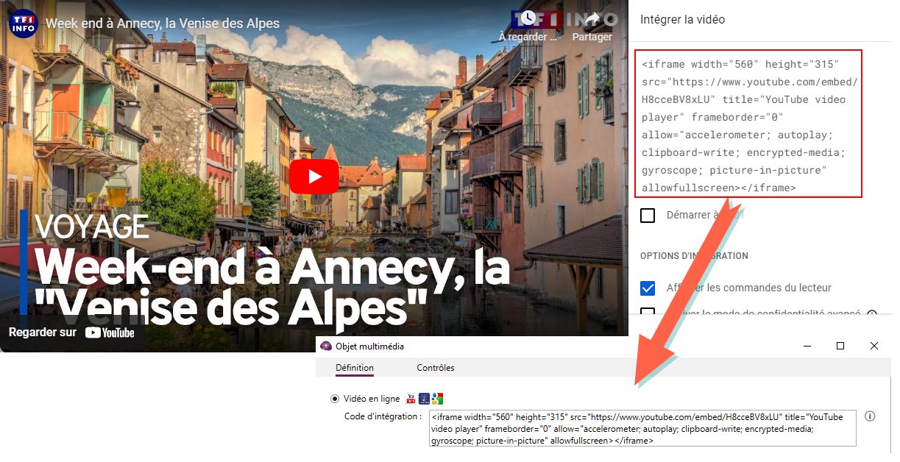

Insérer une illustration (texte, image, vidéo, etc...)
Les illustrations regroupent à la fois les objets multimédias (image, son, vidéo,) et les zones de texte. Pour en intégrer au questionnaire, procédez comme suit :
-
Allez à l'onglet Insertion, groupe Textes et médias.
-
Sélectionnez l’élément à insérer dans votre formulaire.
 Image
Image
-
Depuis l'onglet Définition, cliquez sur le bouton ....
-
Sélectionnez une image depuis la galerie ou cliquez sur Sélectionne une autre image pour utiliser une image présente sur votre ordinateur.
-
(Facultatif) Modifiez la taille de l'image en jouant sur l'échelle en %.
Vous pouvez permettre aux répondant d'afficher l'image dans sa taille réelle en cliquant dessus, il suffit de cocher l'option Permettre au répondant de cliquer sur l'image pour l'agrandir.
-
(Facultatif) Rognez l'image si besoin.
-
(Facultatif) Cochez l'option Texte au survol si vous souhaitez afficher du texte lorsque le répondant passe le curseur au dessus de l'image.
Cette option peut être utilisée pour donner des explications / des informations supplémentaires sur une question etc...
-
(Facultatif) L'option Objet dynamique permet de rappeler les images sélectionnées dans une question précédente ou l'image uploadée depuis une question de type document. Plus d'informations sur les objets dynamiques.
-
Cliquez sur OK pour valider.
Notez qu'il est possible d'appliquer une condition d'affichage sur une image comme pour les questions et d'associer une action à une image.
Plus d'informations sur la mise en place d'une condition d'affichage.
Plus d'informations sur l'association d'action.
Zone de texte
-
Depuis l'onglet Définition, saisissez le texte à insérer dans la zone prévue à cet effet.
-
Personnalisez la police et couleur de votre texte.
-
Cliquez sur OK pour valider.
Notez qu'il est possible d'appliquer une condition d'affichage sur une zone de texte comme pour les questions. Plus d'informations sur la mise en place d'une condition d'affichage.
Vidéo
-
Depuis l'onglet Définition, sélectionnez la source de la vidéo à utiliser.
-
Pour intégrer une vidéo en ligne :
-
Sélectionnez Vidéo en ligne.
-
Copiez le code d'intégration de la vidéo depuis la plateforme sur laquelle elle est hébergée.
EXEMPLE : Nous allons intégrer une vidéo hébergée sur Youtube.

-
-
Pour intégrer une vidéo présente sur votre poste :
-
Sélectionnez Fichier.
-
Cliquez sur ....
-
Sélectionnez la vidéo.
-
(Facultatif) Cochez la case Démarrer au chargement pour que la vidéo se lance automatiquement.
-
(Facultatif) Cochez l'option lire en boucle si vous souhaitez lire la vidéo en boucle.
-
Cliquez sur OK pour valider.
REMARQUE : Les vidéos de type fichier sont très mal supportées par les navigateurs, il est recommandé d'utiliser des vidéos en ligne avec code d'intégration pour une meilleure comptabilité et une expérience utilisateur optimale.
-
-
Notez qu'il est possible d'appliquer une condition d'affichage sur une vidéo comme pour les questions. Plus d'informations sur la mise en place d'une condition d'affichage.
Son
-
Depuis l'onglet Définition, cliquez sur ....
-
Sélectionnez le fichier son à utiliser.
-
Cliquez sur OK pour valider.
Notez qu'il est possible d'appliquer une condition d'affichage sur un son comme pour les questions. Plus d'informations sur la mise en place d'une condition d'affichage.
Code HTML
Accéder à la partie expliquant comment insérer un code HTML.
Analyse
Accéder à la partie expliquant comment insérer une analyse.
-